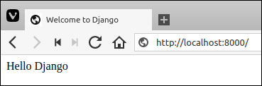
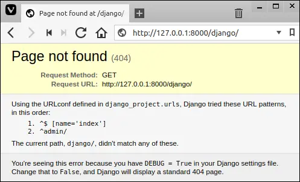
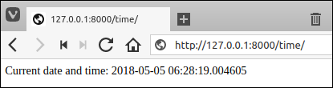
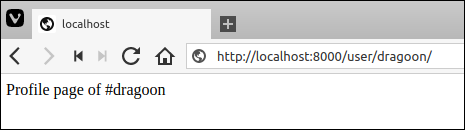
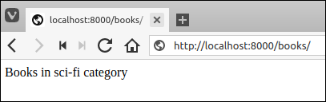
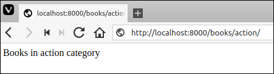
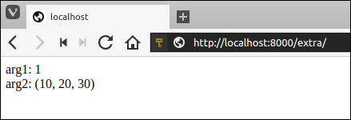
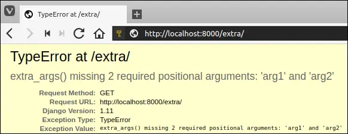
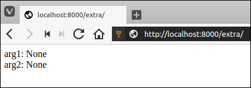

Views and URLconfs in Django
Last updated on July 27, 2020
In the previous chapters, we have learned how to set up a Django project and run the development server. In this chapter, we will learn the basics of creating dynamic web pages in Django.
Creating the first View #
Let's start simple. In this section, we will create a web page that outputs "Hello Django". To do this, open views.py located in the djangobin app (i.e djangobin/django_project/djangobin) in your favorite text editor. At this point, views.py should look like this:
djangobin/django_project/djangobin/views.py
1 2 3 | from django.shortcuts import render
# Create your views here.
|
Delete everything and enter the following code.
djangobin/django_project/djangobin/views.py
1 2 3 4 5 | from django.shortcuts import HttpResponse
def index(request):
return HttpResponse("<p>Hello Django</p>")
|
We have just created a simple view function.
So what's a view function?
A function whose job is to accept a request and return a proper response.
Let's step through the code we have added one line at a time.
- In line 1, we are importing
HttpResponseclass fromdjango.shortcutsmodule. - In lines 4-5, we define the
index()function which returns an instance ofHttpResponseobject.
Every view function takes an argument called request, which is an object of type HttpRequest. The HttpRequest object contains the information about the current web request that has triggered this view.
The view function must return a HttpResponse object. To create a HttpResponse object, simply pass a string representing the content of the page to the constructor.
Now we have created a simple view. To call this view you must create a URL pattern in the URL Configuration or URLconf in short. You can think of URLconf as a table of contents for Django powered web app. In other words, URLconf is a mapping between URLs and view functions that should be called for those URLs. It is Django's way of saying for this URL call this view function and for that URL call that view function and so on.
We create URL pattern using url() function. It accepts two arguments, a regular expression to match the URL and name of the view function to call for this URL.
Let's create a URL pattern. Open urls.py file located in the Django project configuration directory (i.e djangobin/django_project/django_project). This file is also known as site-wide urls.py. The contents of urls.py file should look like this.
djangobin/django_project/django_project/urls.py
1 2 3 4 5 6 | from django.conf.urls import url
from django.contrib import admin
urlpatterns = [
url(r'^admin/', admin.site.urls),
]
|
Note: Comments are removed from the above code snippet to save space.
To bind the index() view function to a URL pattern we need to do two things:
- Add
from djangobin import viewstowards the end of the import list. Create a new URL pattern by adding the following line at the beginning of the
urlpatternslist.url(r'^$', views.index),
The contents of the site-wide urls.py file should now look like this:
djangobin/django_project/django_project/urls.py
1 2 3 4 5 6 7 8 | from django.conf.urls import url
from django.contrib import admin
from djangobin import views
urlpatterns = [
url(r'^$', views.index),
url(r'^admin/', admin.site.urls),
]
|
Start the Django development server if not already running using ./manage.py runserver command and visit http://127.0.0.1:8000/. You should see a page like this:

The first parameter passed to the url() function is a regular expression string and the second is the name of the view function. The regular expression r'^$' matches nothing. In other words, r'^$' refers to the root of the website. If our domain is http://example.com/ then a request to http://example.com/ will call index() view function. When a user requests http://example.com/ Django uses urlpatterns list to figure out which method to call. When it finds the URL pattern that matches, it calls the view function associated with that pattern. If a matching pattern is not found, an HTTP 404 error is returned.
Don't forget what Django calls view is actually a controller.
The url() function accepts many other optional parameters, one such parameter is name keyword argument. The name keyword argument allows us to give a unique name to the URL pattern. So why should we give names to our URL patterns? Defining a name allows us to create URLs automatically in our templates and views. We will see how it's done in the lesson Creating URLs in Django. For now, let's give a name to our newly created URL pattern.
djangobin/django_project/django_project/urls.py
1 2 3 4 5 6 7 8 | from django.conf.urls import url
from django.contrib import admin
from djangobin import views
urlpatterns = [
url(r'^$', views.index, name='index'),
url(r'^admin/', admin.site.urls),
]
|
Django 404 Errors #
Our URLconf at this point contains only two URL patterns - one was provided by Django and the one which we wrote ourself. So what would happen if you request a different URL? Open your browser and try visiting http://127.0.0.1:8000/django/.
If the requested URL doesn't match to any of the existing URL patterns in URLconf then Django throws a 404 error. As the requested URL is not defined in the URLconf, Django will throw an HTTP 404 not found error. Here is how it looks:

The important point to note about this page is that it gives way lot information than it is required. Notice that it exactly tells what URL patterns Django tried from which URLconf before throwing an HTTP 404 error. Sure, this is sensitive information and should be disclosed only to the people involved in the development of the web app.
So, If this information is sensitive then why Django is revealing all this in the first place?
Because by default Django project installed with DEBUG mode set to True. To view this setting open settings.py in Django project configuration directory located at djangobin/django_project/django_project.
djangobin/django_project/django_project/settings.py
1 2 3 4 5 6 7 8 9 10 11 | #...
# SECURITY WARNING: keep the secret key used in production secret!
SECRET_KEY = '#=5=zv^cmqse-d=@#qp8f1bbto=235pz=we723*rt9is_$&hu)'
# SECURITY WARNING: don't run with debug turned on in production!
DEBUG = True
ALLOWED_HOSTS = []
#...
|
To turn off the debug mode set the value of DEBUG to False. When debug mode is off Django outputs a generic HTTP 404 response without any sensitive information. As we are currently in the development phase keep the DEBUG setting to True.
Mapping URLs the right way #
Right now, we only have one application named djangobin in our Django project. Generally, a project consists of at least 3-4 apps. If we keep writing URLconf for every app in the site-wide urls.py file soon it would become a mess. So instead of mappings the URLs directly to site-wide urls.py, we can make our application modular by creating urls.py for every application, that way we can manage URLs much more efficiently and easily. To do so, first create urls.py file inside the djangobin app and add the following code to it.
djangobin/django_project/djangobin/urls.py
1 2 3 4 5 6 | from django.conf.urls import url
from . import views
urlpatterns = [
url(r'^$', views.index, name='index'),
]
|
In line 1 and 2, we are importing necessary function and module. In line 4, we are creating URLconf for the djangobin app.
The next step is to inform the Django project about the URLconf of the djangobin app. To do so, modify the site-wide urls.py as follows:
djangobin/django_project/django_project/urls.py
1 2 3 4 5 6 7 | from django.conf.urls import url, include
from django.contrib import admin
urlpatterns = [
url(r'^index/', include('djangobin.urls')),
url(r'^admin/', admin.site.urls),
]
|
The include() function tells site-wide urls.py file about the existence of urls.py in the djangobin app. The important thing to note here is that in the regular expression r'^index/' doesn't have a trailing $ character instead it has a trailing slash /. This is done so because whenever Django encounters include() function, it chops off whatever the part of the URL matches up to that point and sends the remaining part of the URL to the included URLconf for further processing.
However, we want to to display hello world at the root URL http://127.0.0.1:8000/ instead of http://127.0.0.1:8000/index/, to do so, replace the regular expression r'^index/' with r''.
djangobin/django_project/django_project/urls.py
1 2 3 4 5 6 7 | from django.conf.urls import url, include
from django.contrib import admin
urlpatterns = [
url(r'', include('djangobin.urls')),
url(r'^admin/', admin.site.urls),
]
|
Open your browser and navigate to http://127.0.0.1:8000/. Django will greet you with "Hello Django" response.
Digging deep into the URLs #
Let's see what happens when you request a page.
When you request a page the first thing Django does is to remove the host portion of the URL, for example, in the URL
https://overiq.com/contact/the host portion isoveriq.com.Then, Django reads the value of variable
ROOT_URLCONFfrom Django project'ssettings.pyfile. So what's the role ofROOT_URLCONF?
The ROOT_URLCONF contains the URLconf which must be loaded first. It is also known as root URLconf or site-wide URLconf. In our case it points to urls.py located in djangobin/django_project/django_project directory.
djangobin/django_project/django_project/settings.py
1 2 3 4 5 | #...
ROOT_URLCONF = 'django_project.urls'
#...
|
After reading
ROOT_URLCONF, Django checks each URL pattern one by one in the root URLconf with the requested URL until a match is found. If a pattern is not found, a 404 error is returned.On the other hand, If a pattern is found then Django calls the associated view function. If the second parameter to the
url()function includes a call toinclude()function then Django chops off whatever the part of the URL matches up to that point and sends the remaining part of the URL to the included URLconf for further processing.
Here is an example:
Let's say the requested URL is http://example.com/time/, the first thing Django does is to remove the host portion of the URL. After stripping host portion http://example.com/time/ becomes /time/. The string /time/ is then checked against each URL pattern one by one, until a match is found. If a match is found, corresponding view function is called. Otherwise, an HTTP 404 error is returned.
Outputting Dynamic Data #
The view function we created in the above section was very simple, nonetheless, it introduced you to some basics concepts like view functions, URL patterns and how Django processes the URLs behind the scenes. In our next view, we will output some dynamic content. Let's create a simple web page to output current date and time. If you have done some Python programming then you may already know that Python has datetime module for working with date and time. Here is a quick refresher on how to use it:
1 2 3 4 5 6 7 8 9 10 11 | >>>
>>> import datetime
>>>
>>> current_datetime = datetime.datetime.now()
>>>
>>> current_datetime
datetime.datetime(2017, 1, 24, 13, 59, 42, 135163)
>>>
>>> print(current_datetime)
2017-01-24 13:59:42.135163
>>>
|
It is important to note that above the snippet is pure Python and it has nothing to do with Django. To return current date and time we first have to create a new view. Open views.py in the djangobin app and add a new view function called today_is() below the index() view function as follows:
djangobin/django_project/djangobin/views.py
1 2 3 4 5 6 7 8 9 10 11 12 | from django.http import HttpResponse
import datetime
def index(request):
return HttpResponse("<p>Hello Django</p>")
def today_is(request):
now = datetime.datetime.now()
html = "<html><body>Current date and time: {0}</body></html>".format(now)
return HttpResponse(html)
|
Let's step through the changes we have made in the views.py file:
In line 2, we have added an import statement to import
datetimemodule, so that we can calculate current date and time.In lines 9-12, we have defined
today_is()function. In line 10, we are calculating current date and time by callingnow()method and assigning the result to thenowvariable. In line 11, we are creating an HTML response using string object'sformat()method. The{0}inside the string is just a placeholder for the current date and time and will be replaced by the value of the variablenow. It is important to note that the variablenowrepresents adatetime.datetimeobject not a regular string but when the value ofnowis printed inside the string in place of{0}, the__str__()method ofdatatime.datetimeobject convertsdatatime.datetimeobject to a string. Finally, the view returns anHttpResponse()object containing the generated response.
With view function in place, let's create a new URL pattern to call this view. Open djangobin app's urls.py and add the following URL pattern to call today_is() view function as follows:
djangobin/django_project/djangobin/urls.py
1 2 3 4 5 6 7 | from django.conf.urls import url
from . import views
urlpatterns = [
url(r'^time/$', views.today_is, name='time'),
url(r'^$', views.index, name='index'),
]
|
We have added a new URL pattern to map /time/ URL to the today_is() view function. You are probably getting the hang of this now. Start the server if not already running and visit http://127.0.0.1:8000/time/. If everything went fine Django will greet you with current date and time.

Creating Dynamic URLs #
Dynamic URL is a URL which contains one or more variable part that influences the output of a webpage. So far we have created only static URLs.
Let's create another view to display user profile. In the views.py file add profile() view function as follows:
djangobin/django_project/djangobin/views.py
1 2 3 4 5 6 7 | #...
def today_is(request):
#...
def profile(request):
return HttpResponse("<p>Profile page of user</p>")
|
We want to display user profile, if a user visits URL path /user/<username>/, where <username> is a unique alphanumeric identifier assigned to every user.
The regular expression to match alphanumeric characters is ^[A-Za-z1-3]+$. Therefore the URL pattern ^/user/[A-Za-z0-9]+/$ will match URL paths like /user/cs101/, /user/james/, /user/100ninja/, /user/1000 and so on. However, it will not match URL paths like /user/string#$$$/, /user/high five/, /user/_10days/ and so on.
Our URL pattern ^/user/[A-Za-z0-9]+/$ is working perfectly but there is one problem. To display user profile we need to access username in the URL inside the view function. There two ways to solve this problem. The first method consists of a little bit of trickery and the second one is pretty easy.
Recall that the request parameter of a view function contains all the information about the current web request that has triggered a view. The request object has an attribute called path which returns the portion of the URL after the hostname. For example, if the user requests http://127.0.0.1:8000/user/foo/ then request.path would return /user/foo/. Now, you just need to strip /user/ and the trailing slash and you are done.
The second solution is easy and thus recommended. To pass URL parameters to the view function we use something called named the regular-expression group or simply named group. We create named group using the following syntax:
(?P<name>pattern)
The name is a Python identifier to refer to the matched substring and pattern is the actual regular expression. What Django does behind the scenes is that it takes the named group and passes its value to the view function as a keyword argument. Here is our complete URL pattern after applying named group:
url(r'^user/(?P<username>[A-Za-z0-9]+)/$', views.profile, name='profile')
Add this URL pattern to the end of urlpatterns list as follows:
djangobin/django_project/djangobin/urls.py
1 2 3 4 5 6 7 | #...
urlpatterns = [
url(r'^time/$', views.today_is, name='todays_time'),
url(r'^$', views.index, name='djangobin_index'),
url(r'^user/(?P<username>[A-Za-z0-9]+)/$', views.profile, name='profile'),
]
|
Next, update the profile() view function to accept an additional argument named username as follows:
djangobin/django_project/djangobin/views.py
1 2 3 4 | #...
def profile(request, username):
return HttpResponse("<p>Profile page of #{}</p>".format(username))
|
From now on, a request to URL like http://127.0.0.1:8000/user/foo/ would call the profile() view function as:
profile(request, username='foo')
Visit http://localhost:8000/user/dragoon/ and you will be displayed user profile page like this:

It is important to note that the substring matched by the named group will always be passed to view function as a string, regardless of the regular expression used to perform the match. For example:
url(r'^user/(?P<user_id>[0-9]+)/$', views.profile),
In this URL pattern, the named group only matches integer. In other words, the URL pattern will match URL paths like /user/100/, /user/9999/, /user/1234567/ and so on. However, the profile() view function will still be called with a string value:
profile(request, user_id='1000')
Finally, here are some URL patterns and the URLs they match:
| URL pattern | Description | Sample URLs |
|---|---|---|
url(r'^post/\d+/$', viewname) |
The regular expression \d+ matches one or more numbers |
This URL pattern matches strings like /post/1/, /post/123/, /post/9999/ etc. But, it doesn't match /post/a/, /post/123abc/, /post/!@#$% etc; |
url(r'^blog/(?P<slug>[\w-]+)/$', viewname) |
The regular expression (?P<slug>[\w-]+) matches one or more word characters (alphanumeric or underscore) or dash (-). This regular expression is commonly used to match slug in the URL |
This URL pattern matching strings like /blog/a-long-hyphenated-title/, /blog/mypost/, /blog/1111/ etc. But it doesn't match /blog/?search=query/, /blog/%3Apython/, etc; |
url(r'^archive/(?P<year>\d{4})/(?P<month>\d{2})/(?P<day>\d{2})/$', viewname) |
The regular expression (?P<year>\d{4}+)/(?P<month>\d{2}+)/(?P<day>\d{2}+)/ matches date in ISO 8601 format i.e YYYY-MM-DD. |
This URL pattern matching strings like /archive/2010/01/01/, /archive/5000/30/30/, /archive/9999/99/99/ etc; But it doesn't match strings like /archive/2018/5/5/, /archive/11/11/2018/, etc; |
url(r'^user/(?P<username>[\w.@+-]+)/$', viewname) |
The regular expression (?P<username>[\w.@+-]+) matches username and email. |
This URL pattern matching strings like /user/@draco/, /user/foobar007/, /user/tinker@mail.com/ etc; But it doesn't match strings like /user/, /user/$w00t/ etc; |
Making URL Parameters Optional #
Once in a while, you will encounter scenarios where you would want to make a URL parameter optional.
Let's say we want to display a list of books at the URL path /books/<category>/, where <category> is a placeholder for the book category. A visit to /books/self-help/ would display a list of books from the self-help category. Whereas, a visit to /books/ URL, would display books from default sci-fi category. Thus, the <category> in URL path /books/<category>/ is optional. To accomplish this task, create two URL patterns one without the optional parameter and one with the optional parameter.
Open urls.py file and the add following two URL patterns as follows:
djangobin/django_project/djangobin/urls.py
1 2 3 4 5 6 7 | urlpatterns = [
url(r'^time/$', views.today_is, name='todays_time'),
url(r'^$', views.index, name='djangobin_index'),
url(r'^user/(?P<username>[A-Za-z0-9]+)/$', views.profile, name='profile'),
url(r'^books/$', views.book_category, name='book_category'),
url(r'^books/(?P<category>[\w-]+)/$', views.book_category, name='book_category'),
]
|
There are two things to notice here. Number one, both URL patterns make use of the same view function. Number two, the name of both URL patterns are also the same.
Next, in the views.py add book_category view function as follows:
djangobin/django_project/djangobin/views.py
1 2 3 4 5 6 | #...
def profile(request, username):
return HttpResponse("<p>Profile page of #{}</p>".format(username))
def book_category(request, category='sci-fi'):
return HttpResponse("<p>Books in {} category</p>".format(category))
|
If you now visit, http://localhost:8000/books/, you will be displayed books from the default sci-fi category.

On the other hand, if you visit http://localhost:8000/books/action/, you will be displayed books from the action category.

Passing Extra Arguments to View Functions #
In addition to URL parameters, we can also pass additional arguments to the view functions, as a dictionary. The url() function can take an optional third argument as a dictionary, containing extra keyword arguments to pass to the view function. This technique is commonly employed by built-in view functions to customize the default behavior (we'll meet them in later chapters).
In urls.py file, add new URL pattern named extra_args at the end of the urlpatterns list:
djangobin/django_project/djangobin/urls.py
1 2 3 4 5 | urlpatterns = [
#...
url(r'^book/(?P<category>[\w-]+)/$', views.book_category, name='book_category'),
url(r'^extra/$', views.extra_args, {'arg1': 1, 'arg2': (10, 20, 30)}, name='extra_args'),
]
|
Next, add a view function named extra_args at the end of views.py file:
djangobin/django_project/djangobin/views.py
1 2 3 4 5 6 7 | #...
def book_category(request, category='sci-fi'):
return HttpResponse("<p>Books in {} category</p>".format(category))
def extra_args(request, arg1, arg2):
return HttpResponse("<p>arg1: {} <br> arg2: {} </p>".format(arg1, arg2))
|
If you now visit http://localhost:8000/extra/, you will get the following page:

Note that arg1 and arg2 parameters in extra_args() view function are required. Failing to pass them will result in a TypeError like this:

We can make arg1 and arg2 optional by providing them some default values. Modify extra_args() to accept default values as follows:
djangobin/django_project/djangobin/views.py
1 2 3 4 | #...
def extra_args(request, arg1=None, arg2=None):
return HttpResponse("<p>arg1: {} <br> arg2: {} </p>".format(arg1, arg2))
|
Remove the dictionary from extra_args URL pattern and visit http://localhost:8000/extra/. You will get a response like this:

Views Limitation #
So far we have been able to pull off a basic app just using View part of the MTV pattern. However, our app is severely limited because of the following reasons:
Currently, we are hardcoding HTML code inside our views. At a later date, if we want to modify our HTML it would be very painful to go through each view one by one. Django comes bundled with a powerful templating system which allows us to create complex HTML pages easily instead of hardcoding them inside the views. If we keep hardcoding HTML directly in the views we wouldn't be able to use loops or conditional statements that Django templating system provides inside the HTML (we will see how to use them in Template tags in Django lesson).
In the real world, pages consist of many dynamic components. Embedding dynamic content in a large page using
format()method is very error-prone and tedious.At this point, we haven't yet introduced database into the scene because it would create more mess.
In the upcoming chapters, we will see how using Models and Templates in conjunction with Views helps us to greatly simplify all these issues.
Load Comments